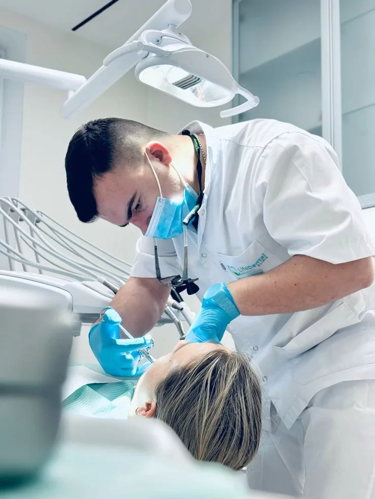
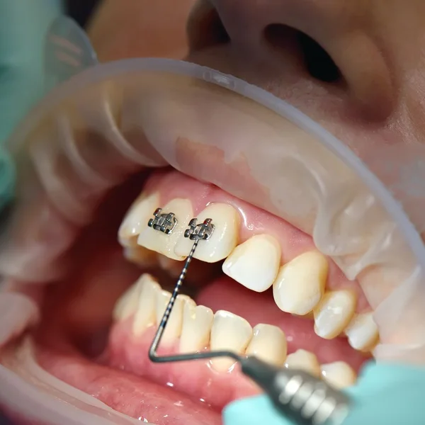
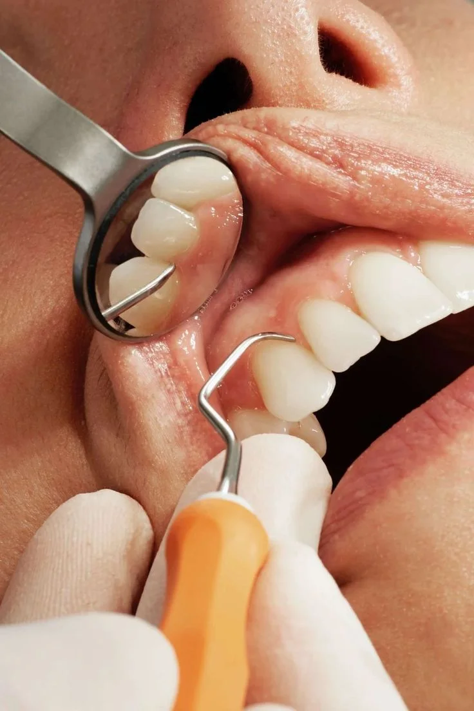
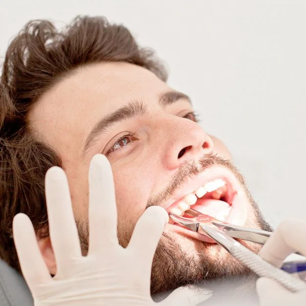
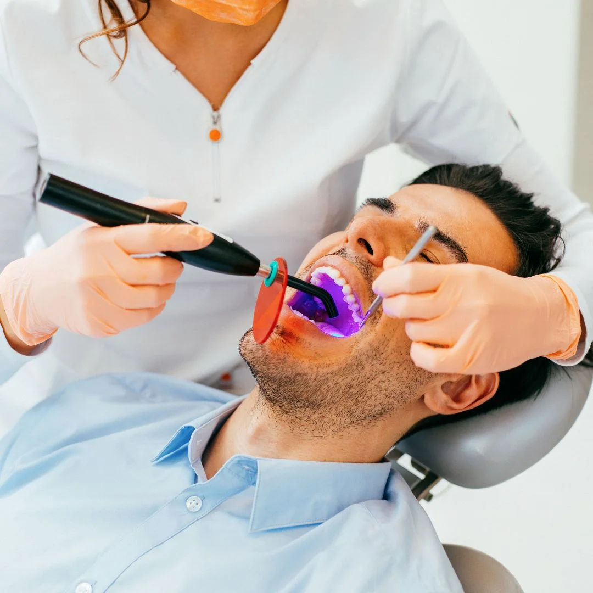
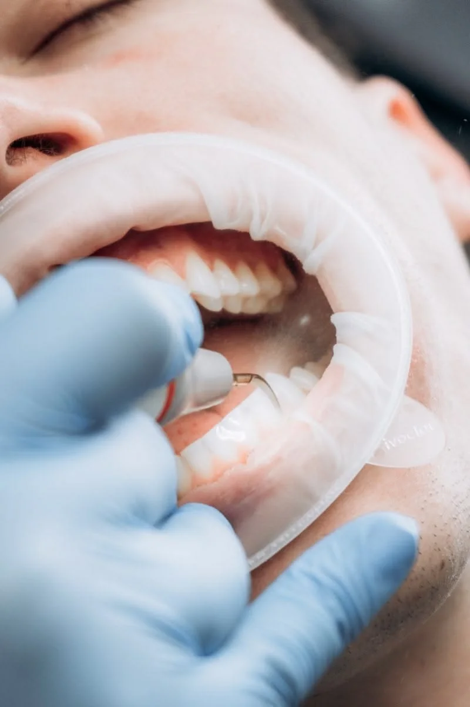

Detartraj și igienizare
Scapi de tartru și de petele de cafea și tutun.
Stomatologie pentru bărbați
Clinica pentru bărbații care au tot amânat dentistul. Îți spunem direct ce ai, cât costă și cât durează. Apoi rezolvăm, fără durere și fără timp pierdut.
Programează o vizită4,9 / 5Nota medie pe care ne-o dau pacienții, după fiecare vizită.
Salut, sunt dr. Andrei Mureșan. De peste 12 ani tratez pacienți care, sincer, ar fi preferat să fie oriunde altundeva decât pe scaunul stomatologic. Știu că mulți bărbați ajung la dentist abia când doare, și nu judec pe nimeni pentru asta.
Fac o evaluare completă, îți arăt pe ecran ce am găsit și primești un plan scris, cu prețuri. Tu decizi ritmul, eu mă țin de cuvânt.


Scapi de tartru și de petele de cafea și tutun.
Câteva nuanțe mai deschis, fără sensibilitate de durată.

Dintele lipsă, înlocuit cu unul care arată și funcționează ca al tău.
Refacem dinții tociți, ciobiți sau îngălbeniți, cu aspect natural.
Pentru scrâșnit noaptea sau pentru box, rugby și arte marțiale.
Durere, dinte spart sau lucrare căzută? Te primim azi.

„Primul meu control în șase ani. Și nu a durut deloc.Recunosc, am amânat pentru că îmi era jenă de cum arătau dinții mei, de la cafea și țigări. Nimeni n-a comentat nimic. Mi-au explicat planul în zece minute, iar după două vizite am un zâmbet pe care nu-l mai ascund.”
„Vin la 7:30, la 8:15 sunt la birou.Pentru mine asta a contat cel mai mult. Fără zile libere, fără săli de așteptare pline. Implantul a fost gata exact când mi s-a spus, la prețul din plan.”
„Gutiera m-a scăpat de durerile de maxilar.Scrâșneam din dinți de ani de zile și nu știam. Doctorul a observat la primul control, iar după două vizite scurte dorm mai bine și nu mă mai doare dimineața.”
Stomatologie modernă pentru bărbații care vor lucrurile rezolvate: clar, rapid și fără durere.


Tarife
O singură plată pentru consultația completă. Afli exact ce ai și ce costă, fără nicio obligație.
Îți ții dinții în formă tot anul, fără să te mai gândești la programări.
Prețurile sunt orientative. Costul final îl primești în scris, după consultație.
O singură platformă pentru tot parcursul tău în cabinet
Sistemul de management stomatologic online, toate datele tratamentului tău într-o singură platformă.
dROOT este un software stomatologic dezvoltat în România și folosit de peste 1.200 de cabinete și clinici. Pentru tine înseamnă programări clare, reamintiri la timp și un dosar digital complet, de la prima vizită până la ultimul control.
Descoperă dROOT ↗


Peste 1.200 de cabinete folosesc deja dROOT Printre ele, și noi
Cu dROOT, programările sunt organizate fără suprapuneri, iar tu primești notificări automate prin SMS sau e-mail înainte de fiecare vizită.
Tratamentul tău e structurat pe etape, cu costuri și programări asociate. Știi mereu în ce stadiu ești și ce urmează.
Radiografiile și fotografiile intraorale sunt atașate direct în fișa ta, păstrate în siguranță și disponibile la fiecare consultație.
Pe modelul 3D al dentiției îți arătăm vizual ce tratăm și de ce, mai ușor de înțeles decât orice explicație pe hârtie.
Răspunsuri scurte la întrebările pe care le auzim cel mai des.
Deloc. Majoritatea pacienților noștri vin după o pauză lungă. Începem cu o evaluare completă și îți spunem pe față ce e urgent și ce poate aștepta, fără reproșuri.
Consultația durează 30–40 de minute, igienizarea în jur de 45. Dacă ai un interval fix, spune-ne la programare și ne încadrăm.
Da. Igienizarea profesională scoate cele mai multe pete, iar dacă vrei mai mult, albirea duce dinții cu câteva nuanțe mai sus. Îți spunem sincer ce rezultat să aștepți.
O gutieră făcută după amprenta ta îți protejează dinții și relaxează maxilarul. Se face în două vizite scurte.
Da, mereu. Primești planul în scris, cu etape și costuri, iar tratamentul începe doar după ce ești de acord.
Nu mai amâna
Completezi în 30 de secunde, iar noi te sunăm în aceeași zi lucrătoare ca să stabilim ora potrivită.